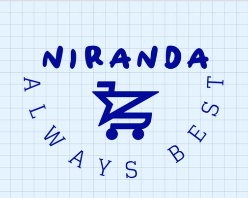

NIRaNDA is an innovative online company dedicated to bridging the gap between consumers and
Products from America and England. With a mission to meet diverse trading needs, NIRaNDA
Specializing in sourcing and supplying a wide range of products that may otherwise be difficult
Access outside these regions

Comprehensive Product Selection
NIRaNDA boasts an extensive catalogue that encompasses:
Fashion and Apparel: Stay ahead of trends with clothing, shoes, and accessories sourced directly from American and British brands.
Electronics and Gadgets: Access cutting-edge technology, from smartphones to home gadgets, renowned for quality and innovation.
Beauty and Personal Care: Discover coveted skincare, makeup, and grooming products from leading brands that prioritize effectiveness and safety.
Home Goods and Décor: Elevate your living space with stylish furniture, decor accents, and functional household items.
Nice Shopping Experience
Navigating the NIRaNDA platform is straightforward, designed to provide a user-friendly experience:
Easy Ordering: Place orders effortlessly through a streamlined interface that ensures clarity and convenience.
Transparent Pricing: Clear pricing structures and shipping costs ensure transparency throughout the purchasing process.
Reliable Delivery: Utilizing efficient logistics networks, NIRaNDA ensures timely delivery to your doorstep, no matter your location.
Customer-Centric Approach
At NIRaNDA, customer satisfaction is paramount:
Personalized Service: Dedicated support teams are available to assist with inquiries, ensuring a tailored shopping experience.
Personalized Help: We have a dedicated special link. You can go to it and indicate your problem. We will get this problem and get back to you soon.